When you speak to Smart Picture Frame, Echo Dot catches your command and sends it to Amazon’s server. Smart Picture Frame’s Alexa skill then checks your command and sends Lambda request to Smart Picture Frame’s Lambda function that is on Amazon AWS. Then, Lambda function generates response back to the Alexa skill, which generates a response message and send it back to the Echo Dot. Then, you will hear the response from your Echo Dot. The Lambda function also publishes MQTT message to Amazon’s AWS IoT. It then captures the message and sends MQTT message in JSON format. Then, the NODE-RED server that is running on Raspberry Pi catches the message and writes the message to a file. We can control our Raspberry Pi according to the message.
Create an Amazon developer account. Then, go to Amazon’s AWS website: https://aws.amazon.com. Sign in and go to AWS IoT page. Click on “Registry” and then “Things” on the left tab. Click on create to create your “Things”.
Give your “Thing” a name and click on create thing.
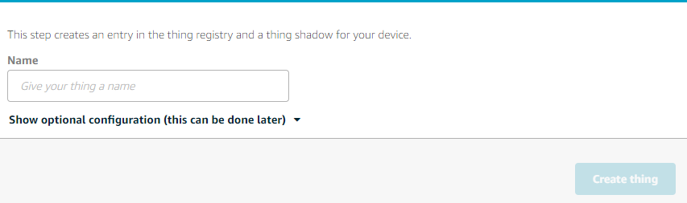 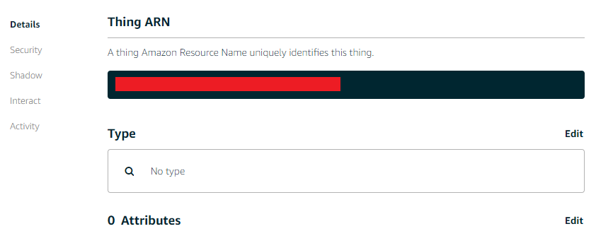Click on security on the left tab and click Create certificate.
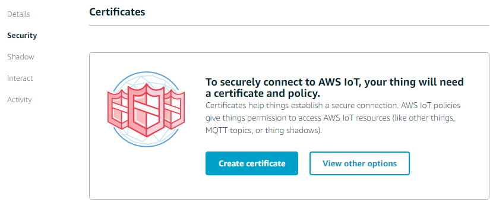 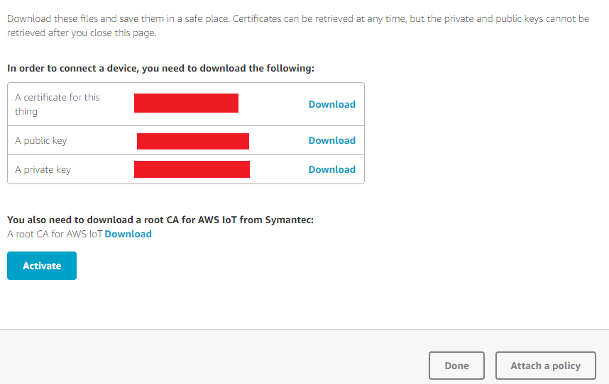Download a certificate for this thing, a public key, and private key and save them to Raspberry Pi’s ~/certs directory. Also, download a root CA for AWS IoT. Create a file name root-CA.pem and copy paste the contents of the root CA. Then, click Activate.
Go to Lambda page on Amazon’s AWS website: https://aws.amazon.com. Then, click on Create a Lambda function. Click on “Configure triggers” on the left tab.
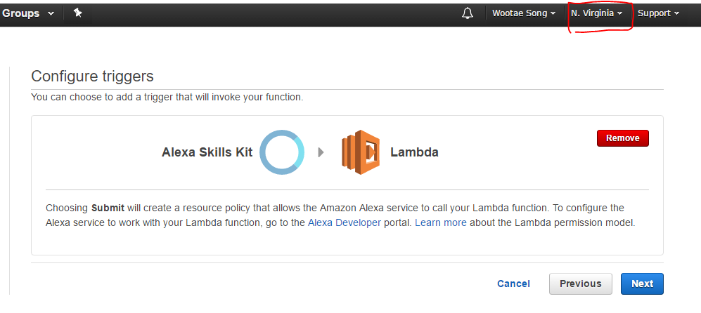Click on the box and select “Alexa Skills Kit”. Then, click Next.
If you do not see “Alexa Skills Kit” option, look at the top right corner and make sure that the region is set to “N.Virginia”.
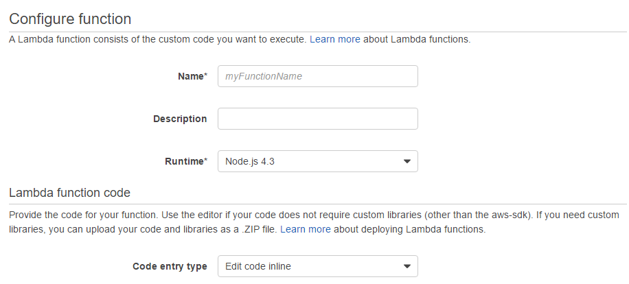Give your Lambda function a name, description, and change the Runtime* to Node.js 4.3.
Then, for the “Code entry type”, select “Upload a .ZIP file”. Then upload “Lambda.zip” that is provided.
Then, for the Role*, select “Create a custom role”.
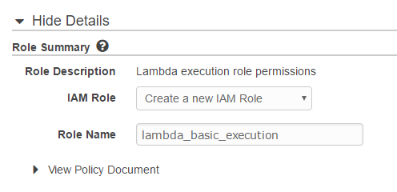Modify your entry as above and click Allow.
Then, click Next.
Review your Lambda function and click “Create function”.
Click on “Functions” on left tab and click on your function.
On top, right corner, you will see the ARN for your function. Copy this as you will need it later.
Go to Amazon Developer website: https://aws.amazon.com. Sign in and click on Alexa tab.
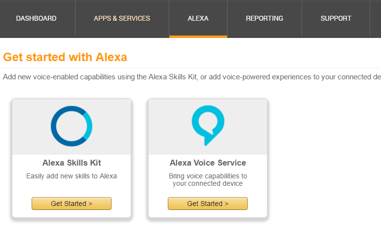Click on Get Started for Alexa Skills Kit. Then, click on Add a New Skill.
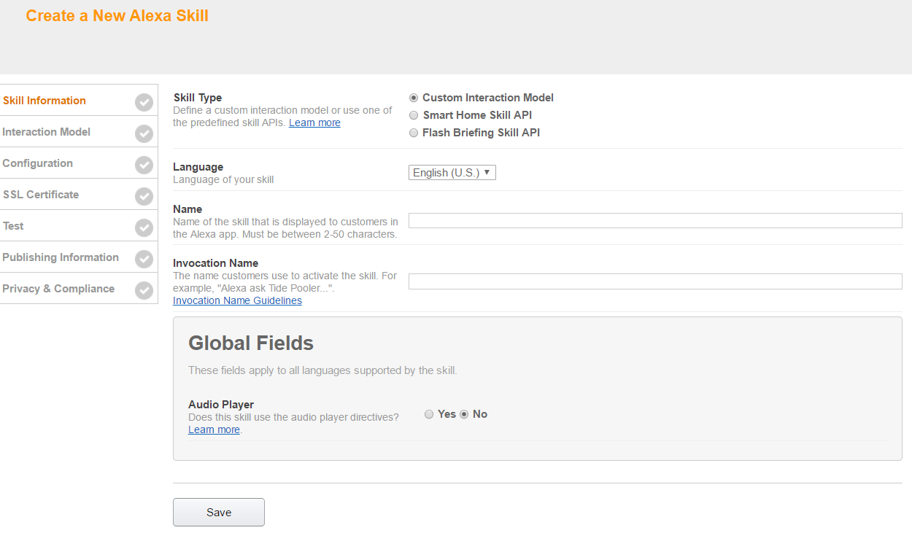Fill out the form and click Save. Then, click Next.
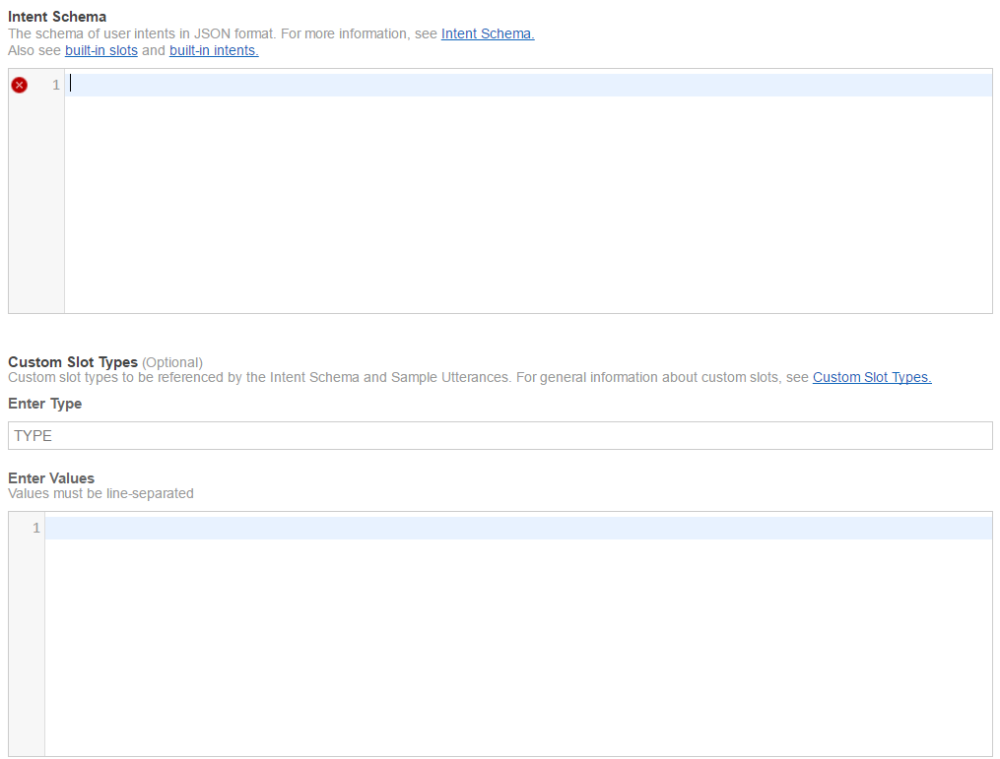For Intent Schema input the following:
{
"intents": [
{
"intent": "TakePictureIntent"
},
{
"intent": "NextPictureIntent"
},
{
"intent": "PrevPictureIntent"
},
{
"intent": "AMAZON.HelpIntent"
}
]
}
For Sample Utterances input the following:
TakePictureIntent take picture
TakePictureIntent take pic
TakePictureIntent cheese
NextPictureIntent next picture
NextPictureIntent next pic
NextPictureIntent next
PrevPictureIntent previous picture
PrevPictureIntent previous pic
PrevPictureIntent previous
Then, click Next.
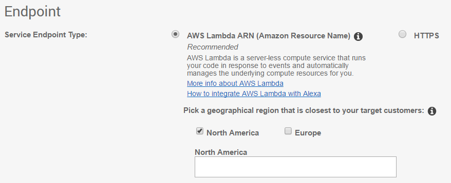Set the settings as above picture and put in your Lambda ARN number. Then, click Next.
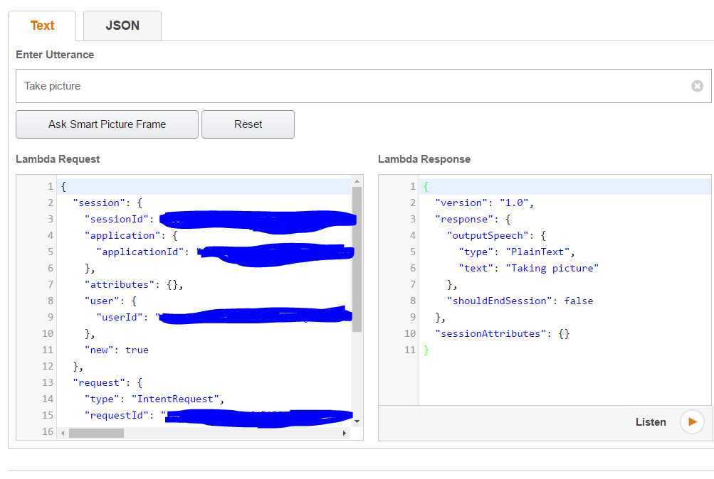You can test the code by entering utterance into the test box. Type in “Take picture” and see what happens.
Download Node-RED on your raspberry pi by referring to following link: http://nodered.org/docs/getting-started/installation.html
Also, download Node-RED dashboard and MQTT by referring to this video:
https://www.youtube.com/watch?v=fV78MQks6BI&t=230sstart your node-red server by typing: ./node-red-start on Raspberry Pi’s terminal. Then, open a browser and type in 127.0.0.1:1880/#.
Then, configure your server as seen in this video:
https://www.youtube.com/watch?v=CIi01OG8G0o&t=Two different programs are running for camera and display: camera.cpp and sdl_display.cpp. Camera.cpp polls the file that Node-RED server writes. If the user commands TakePictureIntent, camera.cpp will take a picture and produce image.ppm file. Also, it will write to a second file the result. Sdl_display.cpp polls the file that camera.cpp writes. If camera.cpp takes a picture, it then converts the picture by executing ppm2bmp program. We need to convert the ppm file to bmp file because SDL cannot read ppm file. We then read the converted image file and display it to the physical screen.
Download “Camera.zip” and extract it to ~/Desktop/camera. Open up a terminal and change directory to camera/build and type cmake . on the terminal. Then, type in make to compile. Then you will get an executable file called simpletest_raspicam. Execute the program by typing ./ simpletest_raspicam.
Open up another terminal and.Change directory to camera/build/sdl_display. Type make to compile. Then, you will get an executable file named sdl_display. Execute the program.
Connect a monitor to your Raspberry Pi using an HDMI cable. Then, connect the Raspberry Pi Camera by referring to this link: https://www.raspberrypi.org/learning/getting-started-with-picamera/.
Download Android Alexa app on your phone and launch it. Sign in with the same developer account you used to create the Alexa skill. Then, open the skill by saying , “Alexa open yourSkillName”. Then, you can say utterances that you listed when you created your skill. Try saying “Take a picture” and see what happens. (Make sure your Node-RED Server is running when you are testing)